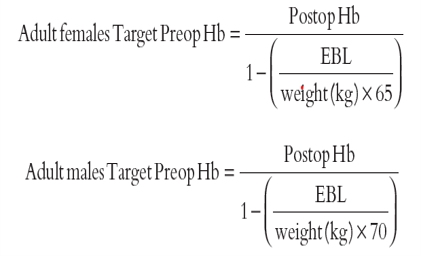

Pré-operatório
Sangramento estimado: 1400 ml
Hb pós programada para um mínimo de 8g/dl
| Reserva: | 4 unidades de CHM |
| 1 Pool de PQ | |
| 1000 ml de PFC | |
| 6 Unidades de Crioprecipitado |
Previsto DDAVP antes da cirurgia
Ácido Tranexâmico antes da cirurgia
Ferritina > 100ng/dl e IST > 20%
Hb de entrada 13,2 g/dl (após ferro venoso)
CASO CLÍNICO

Características da Paciente
Sexo: Feminino

Idade: 18 anos
Peso: 55 Kg
Diagnóstico: Escoliose grave
Indicação: Correção cirúrgica definitiva
Resultados Exames Pré-cirúrgico
Ausência de Comorbidades: Risco Cirúrgico ASA I
Hm 3.900 X106/mm³
Hb 12,0 g/dl
Plaquetas: 180.000 / mm³
AP 100%
Ptta: 30" (controle29")
RNI 1,0
Observações:
Resultados dos demais exames
solicitados dentro dos parâmetros aceitáveis
Hemoglobina minima
Pré-operatória
A paciente tem 55 quilos e se deseja uma hemoglobina pós operatório de pelo menos 8g/dl, qual a hemoglobina mínima necessária para que a previsão de transfusão seja menor ou igual a zero?
Marque a alternativa correta:
Fica a Dica!
Utilize a calculadora para estimar a Hb mínima no pré operatório, conforme cálculo demonstrado no artigo Guinn NR, Resar LMS, Frank SM.
Lembre-se: Teste os valores de Hb pré e encontre a Hemoglobina mínima para que a necessidade teórica de transfusão seja zero (Correspondendo a meia unidade de CHM).